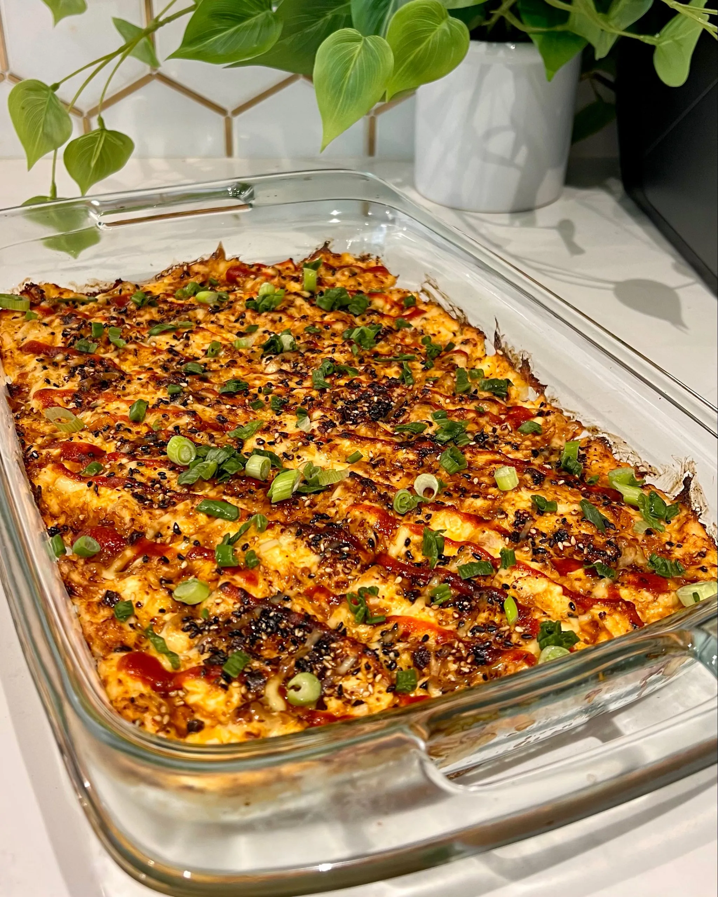
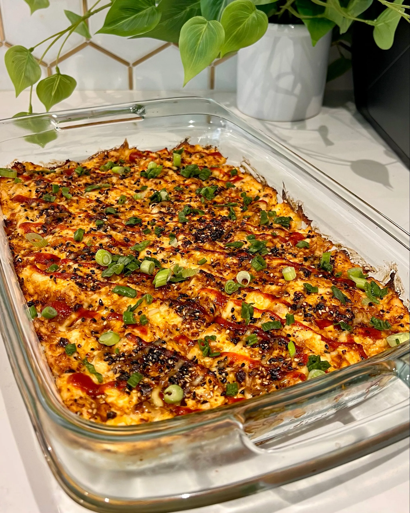

Double Chocolate Cookies
Origin: Michigan Source: Family Recipe Category: Dessert
My daughter learned to make these cookies at a baking camp at Zingermanns and has tweaked the recipe to fit the taste buds of her siblings. They are extremely sugary so the salt helps to balance it. Note, these cookies are best eaten very quickly.
Recipe Ingredients
- Unsalted butter
- Granulated Sugar
- Packed light or dark brown sugar
- Large egg
- Pure vanilla extract
- Semi-sweet chocolate chunks (melted)
- All-purpose flour
- Natural unsweetened cocoa powder
- Baking soda
- Salt
- Semi-sweet chocolate chunks
Recipe Steps
- In a mixing bowl cream together the butter, granulated sugar, and brown sugar
- Add the egg and vanilla extract and beat well
- Add the melted chocolate
- In a separate bowl combine the flour, baking soda, cocoa powder and salt
- Combine the wet and dry ingredients
- Add the unmelted chocolate chunks.
- Form 15 cookies and place on a baking sheet.
- Cook for 12 to 13 minutes at 350 degrees.
Additional Food images


Mapo Tofu
Origin: Chinese Source: Own Recipe Category: Main Dish
Need something smooth and spicy? Mapo Tofu is a simple tofu dish from Sichuan China. It's great over rice and easy to prep/save for college students! This recipe is for people who want to try authentic Chinese food but do not have Sichuan spices to use.
Recipe Ingredients
- 1 pack silken tofu
- 2 green onions, thinly slice
- 1/2 lb ground pork
- 1 pack mapo tofu sauce (store bought)
- 3 cloves minced garlic
- Soy sauce
- 2 tbsp cooking oil
Recipe Steps
- Brown pork in wok with oil for 4-5 minutes
- Add sauce and garlic, stir fry for 2 minutes
- Add tofu and mix lightly as to not break up the tofu too much, until heated through
- Add soy sauce, green onion and dish up
Additional Food Images


Crunchwrap Supreme
Origin: Taco Bell (Fake Mexican) Source: Taco Bell Website Category: Comfort Dish
Despite the noticeable price increase attributed to inflation, I'm an avid Taco Bell fan. There's an undeniable satisfaction in indulging in a Crunchwrap Supreme whenever hunger strikes. Fusing a traditional Mexican taco with a generously sized flattened burrito creates a symphony of flavors that resonates perfectly with my taste buds. The mere thought of it sets my stomach on a journey of anticipation, as each bite combines the comforting essence of familiar ingredients in a novel and exciting way. Yo quiero Taco Bell.
Recipe Ingredients
- Tortilla
- Ground Beef
- Circular taco shell
- Cheese
- Lettuce
- Sour cream
- Melted cheese
- Diced tomatoes
- Taco Bell seasoning
- Cheese sauce
Recipe Steps
- Make the ground beef with taco seasoning, season it well with spices and Taco Bell spices from Target
- Lay the tortilla on the grill and put cheese sauce on top of it, smooth it out in a circular motion, and be generous with the amount
- Next, put the circular crunch taco shell on top of it while adding a generous amount of sour cream on it, don't be shy!
- Next add your seasoned to ground beef onto the tortilla
- Add your diced tomatoes, lettuce, and cheese
- Wrap your Crunchwrap pentagon style and then grill it on a hot pan for about 4 minutes on medium heat, both sides
- Take it off the pan and then cut it in half and you have your Crunchwrap supreme
Additional Food Images


Sushi Bake
Origin: Asian Source: Own Recipe Category: Main dish
Do you want easy, quick way to enjoy sushi without having to do all of the work? Try to make our sushi bake, which takes 10 minutes to assemble and 20 minutes to bake in the oven. Our recipe feeds 8 people.
Recipe Ingredients
- 1 avocado
- 1/2 cup soon sauce
- 2 cups of rice
- 1 tablespoon of rice vinegar
- 3 tablespoons of mayo
- 1 8 oz package of imitation crab
- 1 medium piece of salmon
- 1 cucumber
- 3 tablespoons of sriracha
Recipe Steps
- Preheat oven to 350 degrees
- Make rice. Mix rice vinegar into rice after it is cooked
- Lay out all of the rice at the bottom of a large baking dish
- Lay out the imitation crab and cucumber on top of the rice
- Mix the imitation crab and 2 TBSP mayo into a crab salad
- Smear the crab salad onto the next layer
- Slice the avocado and lay those on the top of the dish
- Pour the rest of the mayo and sriracha on top
- Bake for 20 minutes
- Enjoy!
Additional Food Images

 

Tomato and Egg
Origin: China Source: Own Recipe Category: Main Dish
Tomato and eggs is a hot dish which originated from China. It is a simple and fast dish to make, but it has good nutritional value. It is a very satisfying food to eat and popularly served with rice and topped with green onions.
Recipe Ingredients
- Eggs
- Salt
- Sugar
- Cooking oil
- Tomatoes
Steps
- Crack eggs into a bowl and mix until scrambled
- Cut tomatoes into pieces around the size of your thumb
- Oil a hot pan and cook the eggs until satisfied then remove the eggs
- Re-oil the pan and cook the tomatoes until they loosen
- Combine eggs and tomatoes and season with salt and sugar
Additional Food images